Wellington
My plan was to bump into Fran and Peter downtown and have them invite me over for dinner. Hasn't happened so far. I have a list of things I would have done better on LOTR (bottom of page). And wanted to plug my idea for writing a script for the original ring story--Ring of the Nibelungen. Whereupon Peter would put me up in a cottage overlooking the bay until I'd finished the script. Think I'm being stood up.
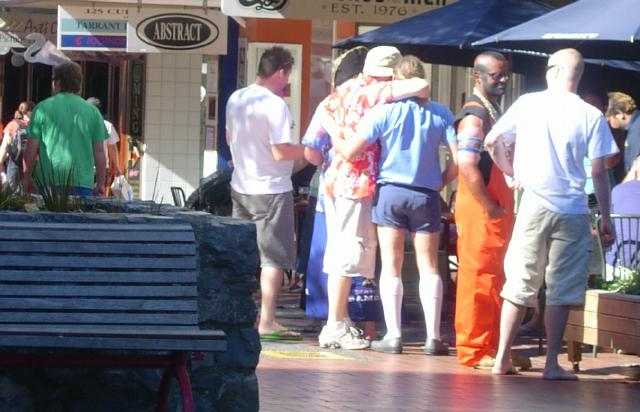
Got into Wellington the day of the Sevens, a southern hemisphere rugby tournament. Party time. Saw some of the game standing outside a sports bar. Fiji beat South Africa. Looked like a real good game. More exciting than football because you can actually see the players. Passed the same bar today and saw the same degree of excitement about the Superbowl.
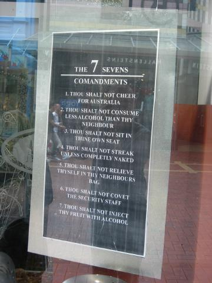
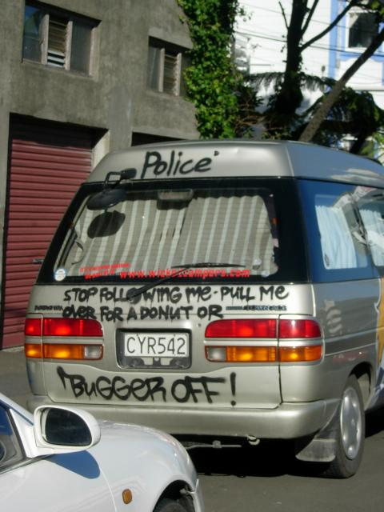
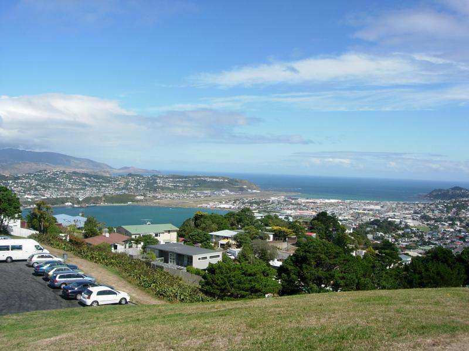
View of Wellington from Mt Victoria, part of the city's greenbelt. (See below also.)
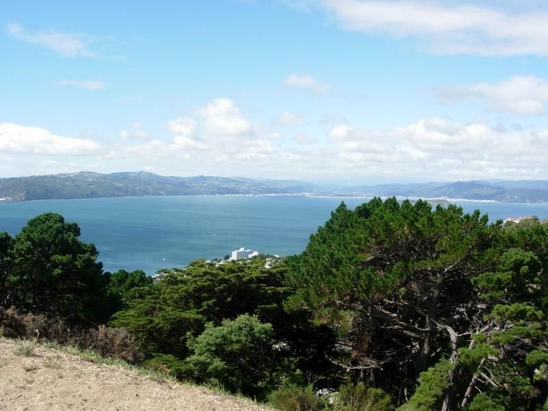
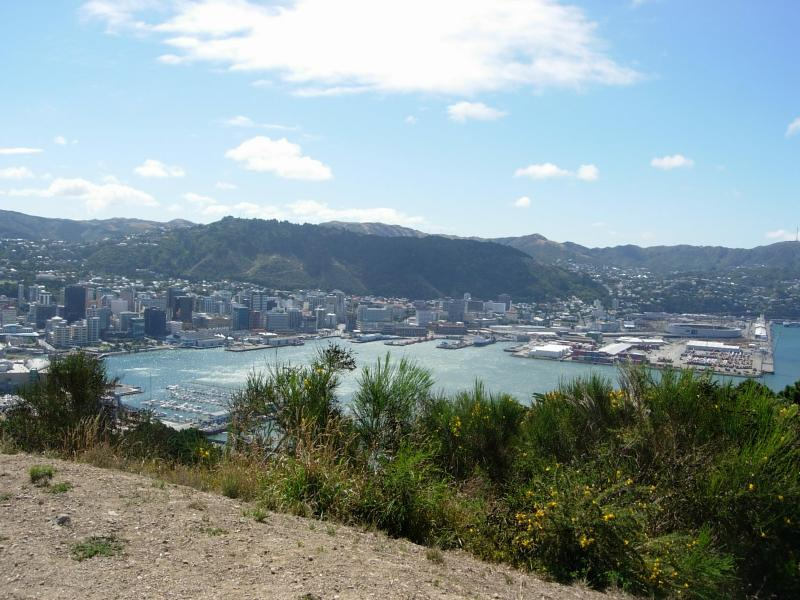
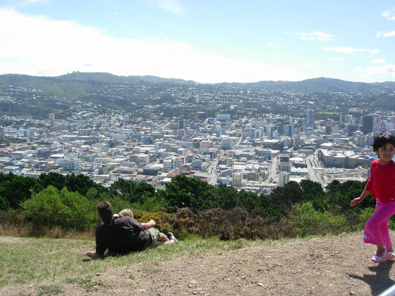
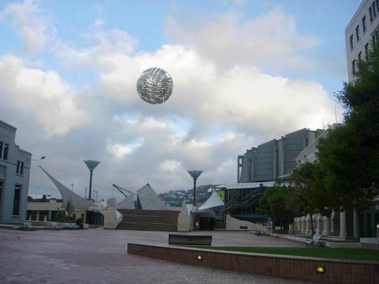
Civic Center
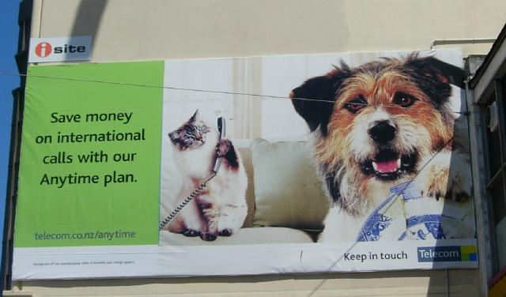
I'm telling!
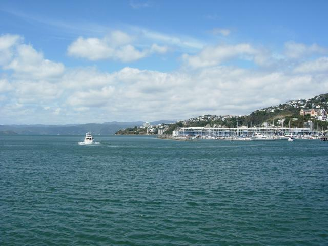
Harbor from ground level
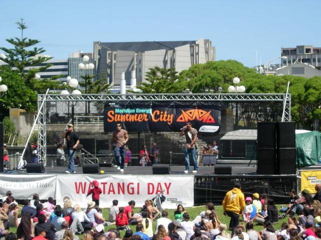
I was also in Wellington on Waitangi Day--the national holiday for the treaty that brought New Zealand into existance. This Maori rap group was excellent---upbeat stuff, the three of them rapping in the kind of tight unison you'd expect from a classical orchestra. These guys could definitely get airplay in the States.
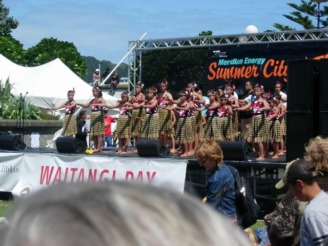
Middle school hula group. It's interesting to note what's changed between Maori and Hawaiian. "Wai" and "Wahine" are the same. "Tane" became "Kane". Similarly, "Iti" became "Iki". Curiously, the most common word "Te" ("the") became "Ka", undergoing the biggest change.
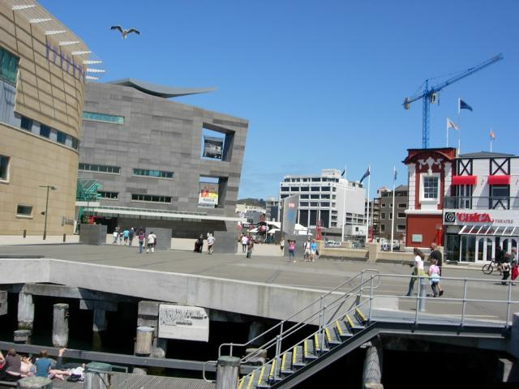
Exterior of Te Papa, the national museum. The poem reads:
Blue rain from a clear sky
Our world a cube of sunlight
But to the south
The violet admonition of thunder
Made me go out and get a book of New Zealand poetry.
Things I would have done differently in LOTR
OK, you can take two views here. With respect to Jackson, the movies accomplished so much that it would be ungrateful to quibble. With respect to Tolkien, the films must be held to the highest standard, considering that one of the greatest stories every written is being retold. Having justified myself, here's my wish list for the 48-hour version that someone will do 50 years from now in a medium that doesn't exist yet.
1. There was a sharp drop in acting quality from the humans (Denethor and Faramir particularly) to the hobbits was startling. Get better hobbit actors or ask more of the ones you have. (This afternoon I read an unauthorized Jackson biography by a NZ film critic. Evidently the first concern for the Hobbits was appearance, and they were so desperate to find anyone at all that Fran started driving around English high schools, trying to find talent. Elijah Woods got in because he mailed an unsolicited videotaped audition.)
2. Gandalf was a muli-layered character in the book--crusty on the surface, kindly underneath, and a powerful immortal deep below that. He only seemed kindly in the movie (the same happened to Mary Poppins BTW). McKellen is certainly capable of carrying this off without adding screen time. So I have to lay the fault at the door of the director here.
3. The hobbits didn't develop during the movie. The sense of them being children at heart didn't come across. They needed those moments of inappropriate frivolity, to be rebuked by Aragorn or Gandalf. The journey from innocence to experience didn't happen. The Scouring of the Shire chapter, cut for lack of time, was the culmination of that journey.
4. Using Gimli as comic relief undercut the seriousness of the story. Merry and Pippen were used for this in the book. Better to have used them, and kept Gimli proud and obstinate.
5. The story of Faramir's temptation by the ring was weakened for no reason at all. The book's version was much more dramatic, and would not have taken any extra time to tell.
6. The matte for Rivendell looked like a matte. The set wasn't convincing. Lothlorien looked to Hollywood, like a children's movie. Better to have show the magic with small touches.
7. The ending should have been forlorn not surreal in coloration. Inevitably, perhaps, the movie conveyed the dramatic elements of the story but not the elegaic ones.